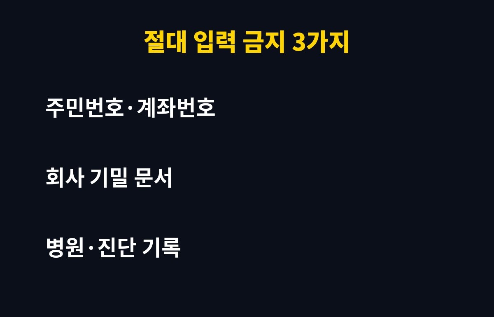
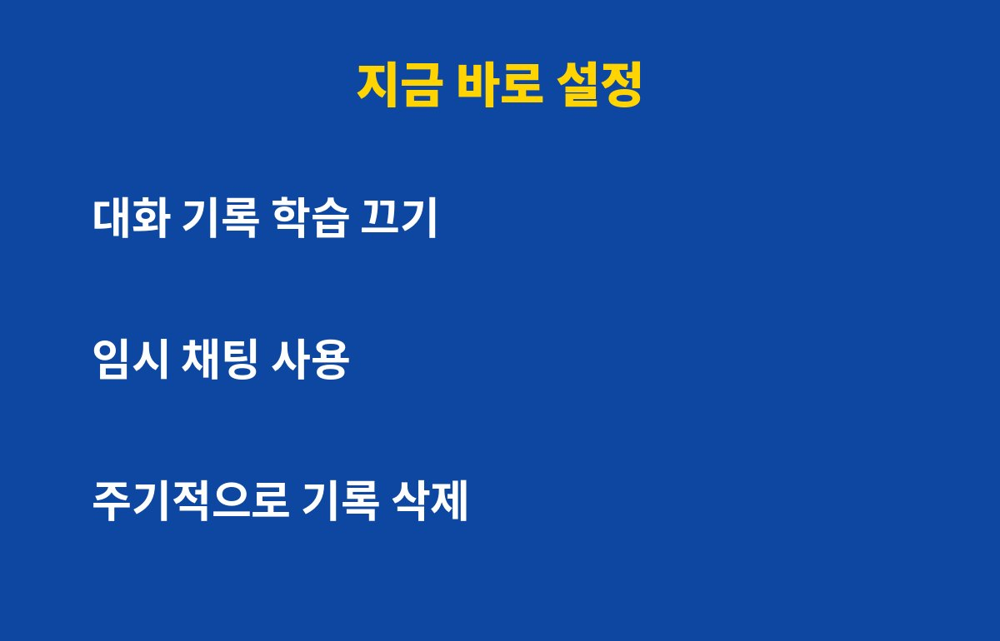

AI 챗봇을 매일 쓴다면, 입력하는 내용 중 몇 가지는 지금 당장 멈추셔야 해요. 대화창에 무심코 붙여넣은 정보가 어디로 가는지 아세요?
대부분의 AI 챗봇은 대화 내용을 서버에 저장해요. 서비스에 따라서는 그 기록이 모델 개선에 쓰일 수도 있어요. 그러니까 대화창은 나만 보는 메모장이 아니라, 회사 서버에 남는 기록이라고 생각하는 게 안전해요.
특히 무료 계정은 기본 설정이 '학습 허용'인 경우가 많아요. 설정 화면을 한 번도 열어보지 않았다면 지금 어떤 상태인지 모르는 분이 대부분이에요.
가장 위험한 건 이 세 가지예요. 아래 표로 한 번에 정리해 드릴게요.
| 종류 | 예시 | 왜 위험할까요? |
|---|---|---|
| 신원·금융 정보 | 주민번호, 계좌번호, 카드번호 | 유출되면 명의도용·금융 피해로 이어져요 |
| 회사 기밀 | 내부 보고서, 고객 명단, 소스코드 | 보안 위반으로 징계 사유가 될 수 있어요 |
| 건강·사생활 | 진단 기록, 가족 이야기, 연락처 | 한번 저장되면 되돌리기 어려워요 |

"이름만 빼면 괜찮겠지" 하고 넘기기 쉬운데요, 문서 속 맥락만으로 누구인지 짐작되는 경우도 많아요. 요약을 맡길 때는 이름·숫자를 가린 뒤 붙여넣는 습관이 좋아요.
대부분의 서비스에는 설정 메뉴에 데이터 관련 항목이 있어요. 대화 내용을 모델 개선에 사용하지 않도록 끄는 옵션이 있는지 확인해 보세요. 이름과 위치는 서비스마다 달라서, 설정에서 '데이터' 또는 '개인정보'를 찾으시면 돼요.
민감한 질문을 해야 할 땐 기록을 남기지 않는 임시 채팅 기능을 쓰세요. 그리고 쌓인 대화는 가끔 직접 삭제해 주세요. 계정이 해킹되면 과거 대화가 통째로 보일 수 있거든요.

회사가 계약한 업무용 서비스는 일반 무료 서비스와 데이터 처리 방식이 다를 수 있어요. 그래도 사내 보안 지침을 먼저 확인하세요. 지침 없이 개인 계정으로 업무 자료를 올리는 건 가장 흔한 사고 원인이에요.
오늘 딱 1분만 투자해서 설정 화면을 열어 보세요. 이런 생활 속 IT 보안 팁이 도움 되셨다면 구독과 공감 부탁드려요!
기사·공식 발표 기준이며 출시·가격 정보는 바뀔 수 있어요.